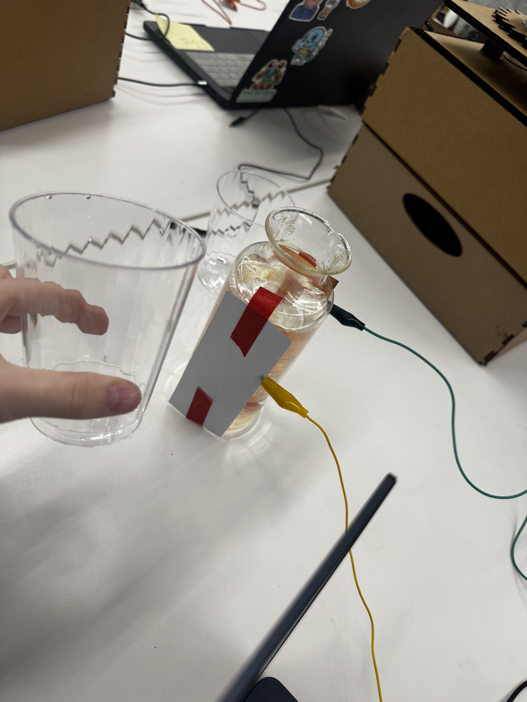
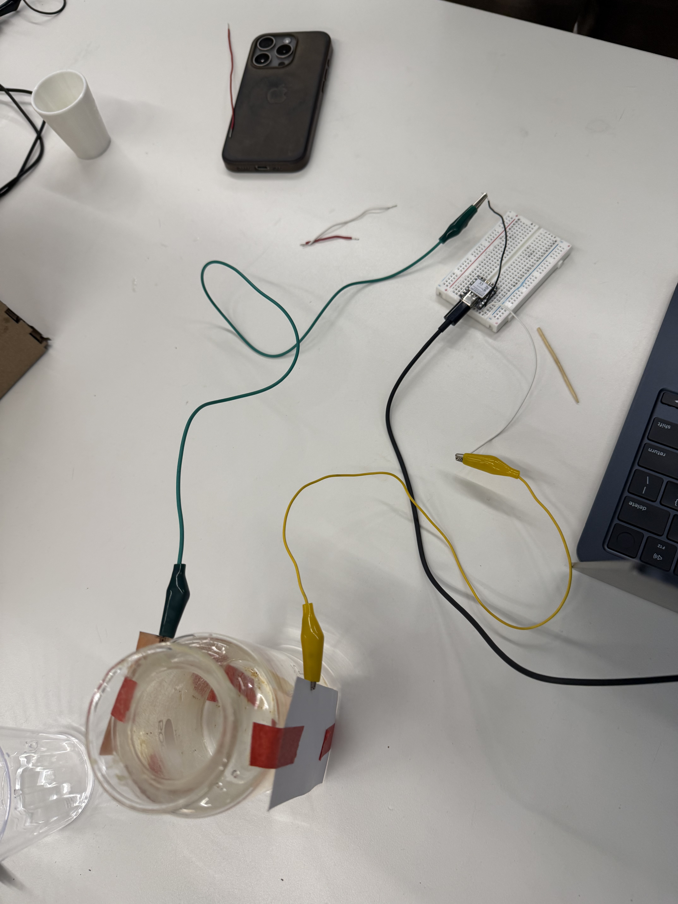
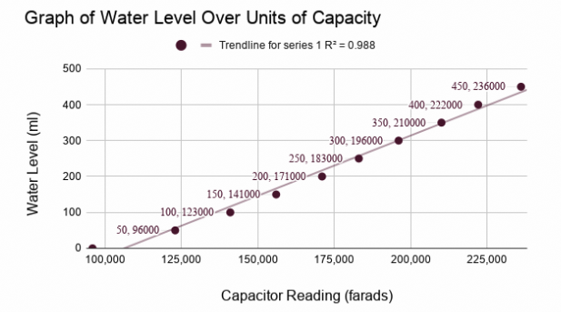
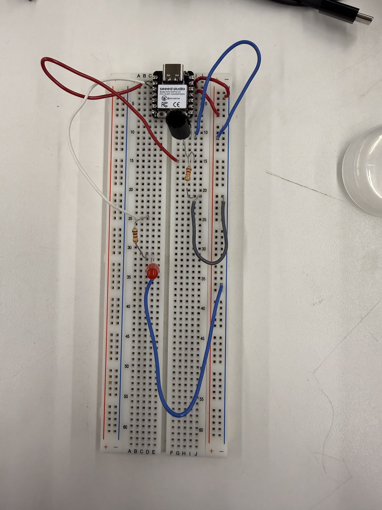

<div class="textcontainer">
<p class="margin"> </p>
<h3>Week 6: Electronic Inputs</h3>
<h2>Assignment 1: Capacitive Sensor</h2>
<h4>Overview</h4>
<p>
In class this week, the group and I build a capacitive sensor that detects the volume of water inside a glass.
We used strips of copper tape on each side of the glass to act as the capacitor plates. The greater the volume of water in the class,
the capacitance increases (due to its greater permitivity than air), allowing us to measure the water level.
</p>
<h4>Photos</h4>
<div style="display:flex; justify-content:center; gap:20px; flex-wrap:wrap; margin-top:30px; margin-bottom:40px;">
<p></p>
<p></p>
</div>
<h4>Video</h4>
<div style="display:flex; justify-content:center; margin-top:30px; margin-bottom:40px;">
<video class="tv-frame" controls style="width:70%; max-width:900px;">
<source src="capacitor.MOV" type="video/mp4">
Your browser does not support the video tag.
</video>
</div>
<h4>Code</h4>
<p>The code uses the function tx_rx to turn the voltage pins from HIGH to LOW and compute the difference in voltage 100 times.
This allowed us to estimate capacitance.
</p>
<div class="code-terminal">
<div class="code-terminal-header">
<span class="code-dot red"></span>
<span class="code-dot yellow"></span>
<span class="code-dot green"></span>
<span class="code-terminal-title">capacitive_sensor.cpp</span>
</div>
<div class="code-terminal-content">
<pre><code class="language-cpp">long tx_rx() {
int read_high;
int read_low;
int diff;
long int sum;
int N_samples = 100;
sum = 0;
for (int i = 0; i < N_samples; i++){
digitalWrite(tx_pin, HIGH);
read_high = analogRead(analog_pin);
delayMicroseconds(100);
digitalWrite(tx_pin, LOW);
read_low = analogRead(analog_pin);
diff = read_high - read_low;
sum += diff;
}
return sum;
}
}</code></pre>
</div>
</div>
<h4>Calibration</h4>
<p>
To calibrate the sensor, we measured the capacitance values for different water levels in the glass.
We then converted the values in our serial monitor to correspond to water height. We used the following formula:
water height = (measurement - min_cup) / (max_cup - min_cup) * (max_water - min_water)
Where min_cup and max_cup are the capacitance values for an empty and full glass, respectively.
We were then able to plot the value on a graph and found a linear relation.
<hr>
<div style="display:flex; justify-content:center; gap:20px; flex-wrap:wrap; margin-top:30px; margin-bottom:40px;">
<p></p>
</div>
<h2>Assignment 2: Calibrating Additional Sensor</h2>
<h4>Overview</h4>
<p>
I also wanted to make a sensor using photoresistor. The idea was to simulate a night light that turned on
in dim lighting. The code I used basically turned on the LED when at a certain resistance threshold.
</p>
<h4>Video & Circuit Schematic</h4>
<div style="display:flex; justify-content:center; gap:20px; flex-wrap:wrap; margin-top:30px; margin-bottom:40px;">
<p></p>
<</div>
<div style="display:flex; justify-content:center; margin-top:30px; margin-bottom:40px;">
<video class="tv-frame" controls style="width:70%; max-width:900px;">
<source src="Sensor copy.MOV" type="video/mp4">
Your browser does not support the video tag.
</video>
</div>
<p>
As you can see in the video, the arduino value increases (resistance increases) when light intensity decreases. Past the threshold of 2500. The LED turns on.
</p>
<h4>Code</h4>
<div class="code-terminal">
<div class="code-terminal-header">
<span class="code-dot red"></span>
<span class="code-dot yellow"></span>
<span class="code-dot green"></span>
<span class="code-terminal-title">light_sensor_calibration.cpp</span>
</div>
<div class="code-terminal-content">
<pre><code class="language-cpp">int threshold = 2500;
int LEDpin = A1;
void setup() {
Serial.begin(9600);
pinMode(A0, INPUT); // photoresistor
pinMode(A1, OUTPUT); // LED
}
void loop() {
int photoR_vals = analogRead(A0);
Serial.println(photoR_vals);
if (photoR_vals > threshold) {
digitalWrite(LEDpin, HIGH);
}
else {
digitalWrite(LEDpin, LOW);
}
delay(1000);
}</code></pre>
</div>
</div>
<h4>Preparing CAD files for CNC week</h4>
<div class="iframe-container">
<iframe src="https://college959.autodesk360.com/shares/public/SH90d2dQT28d5b6028115757240e66c1e1de?mode=embed" width="640" height="480" allowfullscreen="true" webkitallowfullscreen="true" mozallowfullscreen="true" frameborder="0"></iframe>
</div>
<div style="display:flex; justify-content:center; margin-bottom:40px; gap:20px;">
<a href="./CNC Mill.stl" download style="background-color: #333; color: #f3f3f3; padding: 12px 24px; border-radius: 6px; text-decoration: none; font-weight: bold; border: 2px solid #555; transition: 0.3s;">
⬇️ Download CNC Mill STL
</a>
</div>
<p>
For CNC week I want to cut out a Chinese idiom, 顺其自然 (shùn qí zì rán), which translates
roughly to "go with the flow / follow the natural course." The inspiration for this was learning
about Daoism in the Happiness gened. highly recommend.
</p>
<hr>
</div>